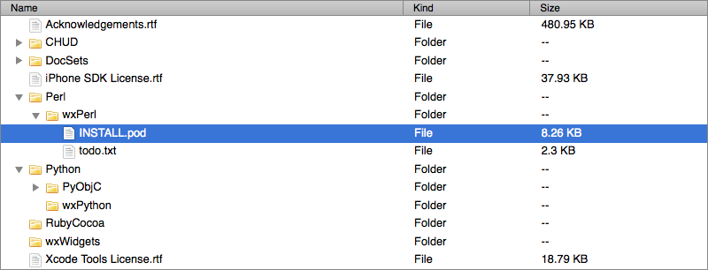

jQuery treetable 3.0
Quick links: download, documentation and examples.
The jQuery treetable plugin enables rendering a tree structure in a column of an HTML table. When I wrote the original treetable plugin back in 2008 I was still fairly new to creating jQuery plugins. In the meantime I have learned a lot more about jQuery plugin authoring and I wanted to apply this knowledge to the treetable plugin. The result of this is version 3.0 which has been completely rewritten with performance and compatibility with other plugins in mind.

Notable Changes
Most of the features from version 2.0 are still there but the way the plugin is used has changed significantly. This version is not a drop-in replacement, although the required changes should be straightforward in most use cases.
Data- Attributes for Metadata
data-attributes are used for the tree metadata, instead of the id and class attributes used (abused) in previous versions.
Before:
<tr id="node-42" class="child-of-node-31">
After:
<tr data-tt-id="42" data-tt-parent-id="31">
No More Namespace Pollution
Previous versions of treetable had a bad habit of adding functions directly to the jQuery object. This is considered bad practice and causes a lot of trouble, for example when the plugin is used with Twitter Bootstrap. Treetable 3.0 follows the guidelines on plugin authoring from the jQuery project and no longer exposes functions where it shouldn’t. All function calls to the public API now have to go through the treetable() function.
Before:
$("#tree").collapseAll()
After:
$("#tree").treetable("collapseAll")
Built-in Support for AJAX Use Case
loadBranch and unloadBranch functions have been added to the plugin. With these two functions it is easy to add new rows to the table after it has been rendered. This is for example useful in the use case where rows are loaded remotely using AJAX. An example implementation of these functions can be found at https://github.com/ludo/jquery-treetable-ajax-example.
Name Change
Small difference with ‘big’ consequences: the uppercase ’T’ in the name of the plugin has been changed to a lowercase ’t’. The rationale behind this is that there has always been a mix between ‘treetable’ and ‘treeTable’ in the codebase and this didn’t really make sense.
If you are upgrading from previous versions you will want to search and replace any occurrences of ‘treeTable’ with ‘treetable’ in your JavaScript and CSS.
Persistence
No more built-in persistence. Instead one should use external plugins/libraries to persist the tree structure between page requests. This allows the treetable plugin to remain lean and focus on what it does best.
jQuery Version Requirement
The minimum required version of jQuery has gone up from 1.5 to 1.6.
Performance Improvements
jQuery treetable has been rewritten with performance in mind. Internally it relies a lot less on DOM searches and DOM manipulations, which was one of the largest bottlenecks in previous versions. The tree is now cached in standard JavaScript data structures which allow for much faster searches, rendering and manipulations of the tree.
Test Suite
The plugin comes with a test suite that can be used to verify the behaviour of the plugin. Currently the suite consists of over one hundred tests that pass in all major browsers (Firefox, Chrome, IE9).
Source Repository, Reporting Issues and Documentation
Stable versions can be downloaded from the plugin homepage at the jQuery Plugin Registry. The source repository can be found on Github. Please report any issues through Github issues. The documentation is available at http://ludo.cubicphuse.nl/jquery-treetable.